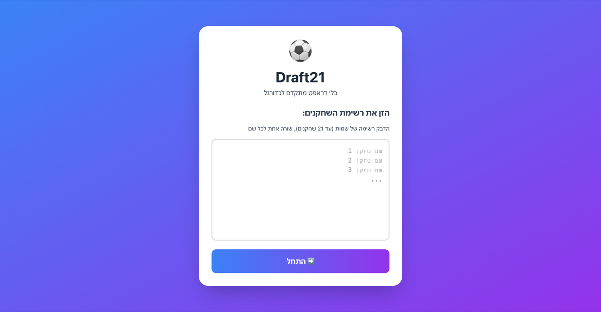

1. Import the roster
Paste raw WhatsApp text and convert it into a clean player list with duplicate cleanup.
Snake draft system for 21-player football games that turns messy team creation into a fast, fair, host-led flow.
The shipped app currently uses Hebrew UI copy because it was built for the football group that uses it. The workflow shown here is the same product flow described in English.


Reduce the friction of organizing 21-player football games by giving one host a clear way to import players, set captains, and produce three balanced teams without WhatsApp chaos or arguments over fairness.
Casual football games often start with one long WhatsApp thread, a messy list of names, and a debate about how to split teams fairly. With 21 players, manual balancing becomes slow and visibly biased. The opportunity was to use a familiar sports mechanic, the snake draft, to make the setup phase feel both fair and fun.
Paste raw WhatsApp text and convert it into a clean player list with duplicate cleanup.
Choose exactly three captains and map them to Red, White, and Black before drafting starts.
Reverse the pick order each round so no captain keeps the strongest positional advantage.
Let the host sanity-check the final team layout before the result is shared with players.
Removes prep work by extracting and formatting names directly from group chat text.
Locks the draft to exactly three captains so the team structure is explicit from the start.
Alternates direction every round to balance pick power and keep the draft transparent.
Keeps available players, current turn, and team composition visible as the draft unfolds.
Adds a final checkpoint before publish so mistakes are caught before teams are locked in.
Stores draft progress locally so a refresh or disconnect does not force the group to start over.
The main design choice was to treat team creation as a rules problem, not just a UI problem. Snake drafting removes the unfairness of always picking first, while the visible turn order makes the process easier for everyone in the group to trust. That turns a usually frustrating setup step into part of the game-night experience.
Draft21 already runs live across multiple devices. The next product focus is production-grade session reliability, smarter pre-draft decision support, and deeper league-level tracking for recurring groups.
I built Draft21 because organizing teams for real football matches was taking longer than it should. The project let me combine product thinking, game design principles, and lightweight mobile UX into a tool that solves a real social coordination problem.
Open the live app to test the import, captain setup, and snake draft structure on mobile.
Open Draft21